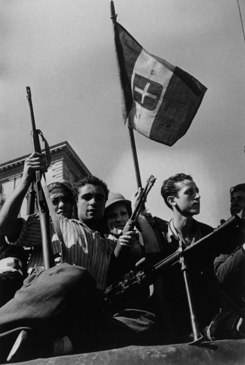

Italia en la Segunda Guerra Mundial: Una Perspectiva Histórica
La participación de Italia en la Segunda Guerra Mundial fue un capítulo complejo y controvertido en la historia del país y del conflicto global que sacudió al mundo entre 1939 y 1945.
Desde el surgimiento del régimen fascista de Benito Mussolini en la década de 1920, Italia había estado buscando afirmar su poderío y expandir su influencia en el escenario internacional.
Sin embargo, su entrada en la guerra en 1940, del lado del Eje junto con Alemania y Japón, tuvo consecuencias catastróficas tanto para Italia como para el resto del mundo. En este ensayo,
exploraremos en detalle la participación de Italia en la Segunda Guerra Mundial, desde sus motivaciones iniciales hasta las consecuencias a largo plazo.
Antecedentes Históricos: El Ascenso del Fascismo en Italia
Para comprender plenamente la participación de Italia en la Segunda Guerra Mundial, es crucial examinar el contexto histórico que condujo al ascenso del fascismo en el país. Tras la Primera
Guerra Mundial, Italia se encontraba en una situación de crisis económica y social, con altas tasas de desempleo, inflación y agitación política. En este clima de malestar, Benito Mussolini
emergió como líder carismático, prometiendo restaurar la grandeza de Italia y establecer un régimen autoritario que acabara con la inestabilidad.Mussolini fundó el Partido Nacional Fascista
en 1921 y, a través de tácticas violentas y la supresión de la oposición política, consolidó su poder en los años siguientes. En 1922, lideró la "Marcha sobre Roma", un movimiento que culminó
en su nombramiento como Primer Ministro por el rey Víctor Manuel III. A partir de entonces, Mussolini estableció un gobierno fascista que ejerció un control total sobre Italia, suprimiendo la disidencia
y promoviendo la propaganda para glorificar al Estado y al líder.
Los Primeros Años de la Segunda Guerra Mundial: La Alianza con Alemania
Cuando estalló la Segunda Guerra Mundial en septiembre de 1939, Italia inicialmente se mantuvo neutral, adoptando una política de "no beligerancia". Mussolini observó con cautela los acontecimientos
en Europa, evaluando las oportunidades para expandir la influencia italiana sin involucrarse en un conflicto a gran escala. Sin embargo, a medida que la guerra progresaba y las potencias del Eje,
lideradas por Alemania, parecían estar en ascenso, Mussolini comenzó a contemplar la posibilidad de unirse a la contienda.
En mayo de 1939, Italia y Alemania firmaron el Pacto de Acero, una alianza militar que fortaleció los lazos entre los dos regímenes fascistas. Este pacto sentó las bases para una mayor cooperación
entre Italia y Alemania en los años venideros. A pesar de esto, Mussolini inicialmente mostró reticencia a unirse a la guerra, reconociendo la debilidad relativa de las fuerzas armadas italianas en
comparación con las de Alemania.
La Invasión de Francia y los Balcanes: La Entrada de Italia en la Guerra
La situación cambió en junio de 1940, cuando Alemania logró una victoria fulminante sobre Francia, lo que dejó a Gran Bretaña como la única potencia aliada en Europa occidental. Inspirado por el
éxito alemán, Mussolini decidió aprovechar la oportunidad para expandir el territorio italiano y aumentar su influencia en la región mediterránea. El 10 de junio de 1940, Italia declaró la guerra
a Francia y Gran Bretaña. La participación italiana en la guerra se caracterizó por una serie de campañas militares en el Mediterráneo y los Balcanes, con resultados mixtos. La invasión de Francia
fue relativamente breve y poco significativa en comparación con la ofensiva alemana, pero Italia logró ocupar partes del sureste de Francia y establecer una presencia en el Mediterráneo occidental.
Sin embargo, la campaña italiana en Grecia resultó en un desastre, con las fuerzas griegas infligiendo severas derrotas a las tropas italianas.
La Campaña del Norte de África y el Desastre de El Alamein
Una de las campañas más destacadas de Italia durante la Segunda Guerra Mundial fue su participación en el Norte de África. Italia había establecido colonias en Libia y Etiopía en las décadas anteriores,
y Mussolini buscaba expandir aún más la influencia italiana en la región. Sin embargo, la campaña italiana en el Norte de África resultó en una serie de derrotas humillantes a manos de las fuerzas
británicas lideradas por el general Erwin Rommel. La batalla de El Alamein, en octubre-noviembre de 1942, fue un punto de inflexión crucial en la campaña del Norte de África. Las fuerzas británicas
infligieron una derrota decisiva a las tropas italianas y alemanas, obligándolas a retirarse y cediendo el control del norte de África a los Aliados. Esta derrota marcó el comienzo del declive del poderío
militar italiano y debilitó aún más la posición del país en el conflicto.
La Caída de Mussolini y el Armisticio de Cassibile
A medida que la guerra progresaba y la situación militar de Italia se volvía cada vez más desesperada, la oposición interna al régimen de Mussolini comenzó a crecer. En julio de 1943, Mussolini fue
depuesto y arrestado por el Gran Consejo Fascista, liderado por el mariscal Pietro Badoglio. El nuevo gobierno italiano, bajo el liderazgo de Badoglio, inició negociaciones secretas con los Aliados
para poner fin a la participación italiana en la guerra. El 3 de septiembre de 1943, Italia firmó un armisticio con los Aliados en Cassibile, Sicilia, poniendo fin a su alianza con Alemania y retirándose
del conflicto del lado del Eje. La firma del armisticio fue seguida por la ocupación alemana de Italia y el establecimiento de un gobierno títere en el norte del país. Italia se convirtió así en un
campo de batalla entre las fuerzas alemanas y los partisanos italianos que luchaban por la liberación del país.
La Resistencia Italiana y la Liberación del País
La resistencia italiana contra la ocupación alemana fue un aspecto crucial de la historia de Italia durante la Segunda Guerra Mundial. Los partisanos italianos, formados por grupos de diferentes orientaciones
políticas y sociales, llevaron a cabo una campaña de guerrilla contra las fuerzas alemanas y colaboracionistas italianas en todo el país. A través de sabotajes, emboscadas y ataques contra las infraestructuras
militares y de comunicaciones alemanas, los partisanos desempeñaron un papel significativo en la liberación de Italia. La resistencia italiana alcanzó su punto culminante en 1944, cuando las fuerzas aliadas
lanzaron la Operación Overlord en Normandía y avanzaron hacia el norte de Italia desde el sur. La liberación de Roma en junio de 1944 y la posterior rendición de las fuerzas alemanas en Italia en mayo de 1945
marcaron el fin de la ocupación alemana y el regreso de Italia a la comunidad de naciones libres.
Conclusiones: Legado y Lecciones
La participación de Italia en la Segunda Guerra Mundial dejó un legado duradero en la historia del país y del mundo. El régimen fascista de Mussolini, con su búsqueda de grandeza imperial y su alianza con Alemania,
llevó a Italia por un camino de destrucción y tragedia. La guerra dejó profundas cicatrices en la sociedad italiana y provocó una reevaluación de la identidad nacional y el papel de Italia en el escenario mundial.
La Segunda Guerra Mundial también proporcionó lecciones importantes sobre los peligros del nacionalismo extremo, el autoritarismo y el expansionismo militar. La tragedia y el sufrimiento causados por el conflicto
sirven como recordatorio de la necesidad de promover la paz, la cooperación internacional y el respeto por los derechos humanos en el mundo contemporáneo.
En conclusión, la participación de Italia en la Segunda Guerra Mundial fue un capítulo oscuro y complejo en la historia del país, marcado por la ambición desmedida, la tragedia y la lucha por la libertad. A través
del estudio y la reflexión sobre este período, podemos comprender mejor las fuerzas que moldearon el mundo moderno y trabajar hacia un futuro de paz y prosperidad para todas las naciones.
